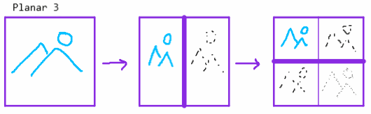
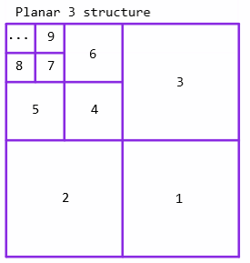
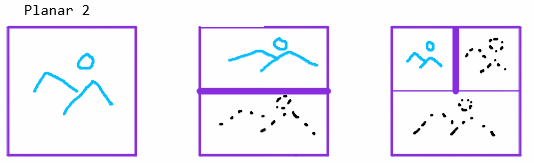
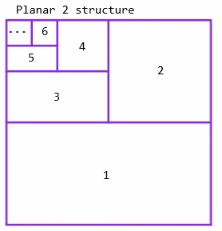
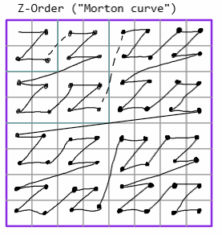
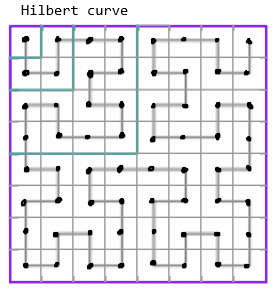
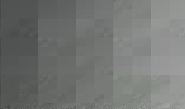
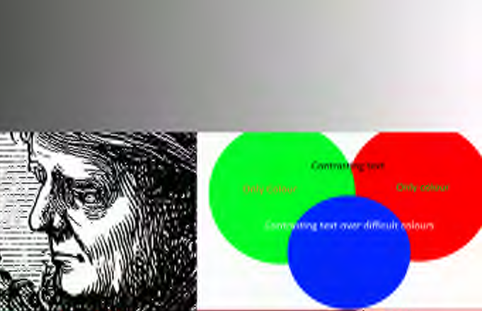
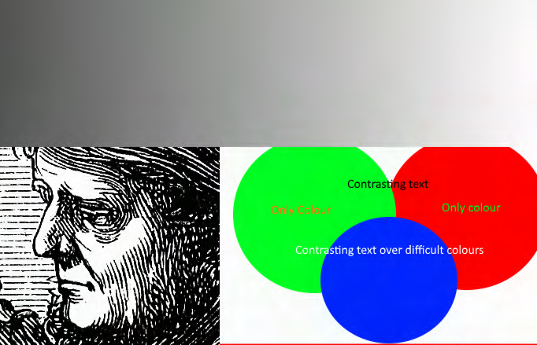
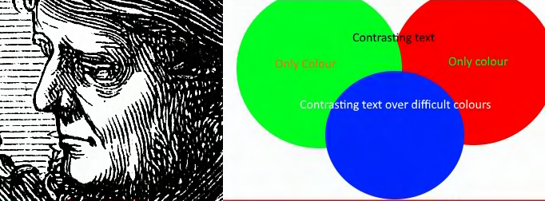

General notes from experiments using wavelets for image compression.
The purpose of the project is to make a file format for images that meets these goals:
Non-goals:
Code for these experiments is in the project at https://github.com/i-e-b/ImageTools
The wavelet transform is inherently 1 dimensional. There are a few different ways to apply this to planar images (2D) and video (3D). I have looked into planar separation (applying the transform alternately to each individual row and column of the image) and spacefilling curve transforms (where we transform the image into a single 1 dimensional array and apply to transform in a single pass).
The method I've seen in most work (including JPEG2000) is what I'll call Planar 3, as it results in 3 sets of wavelet coefficients per decomposition round.
 This includes a double-decomposition of coefficients in the HH region (marked 1, 4, 7 in the structure image). My tests show that this both increases computation and reduces compression efficiency (i.e. gives larger file sizes for the same input)
Instead, I propose 'Planar 2', which produces 2 sets of wavelet coefficients per decomposition round.
 This reduces computation of the wavelet transform by 0.25, as the HH section is not calculated. It also improves resulting file size: Using test image 3 and no quantisation Planar 3 = 691kb, Planar 2 = 655kb, or about 5% improvement.
I experimented using the 'Z order' and 'Hilbert' curves as spatial transforms. Both of these added significant processing time to perform the transform, introduced significant compression artifacts during quantisation, and resulted in overall larger image sizes. I would consider this a strong failure.
Using test image 3 and no quantisation: Planar 2 = 655kb, Z-order = 871kb
  Quantisation of wavelet coefficients has the greatest controllable effect on file size and image quality. For images that contain large blocks of similar value (the kind that perform well with PNG images) quantisation gives minimal gains. For complex natural images, quantisation gives very great reduction of file size with a corresponding reduction in image quality. We apply different quantisation levels to each channel -- reducing Luma the least, and chroma channels significantly. We do not sub-sample chroma directly, as the transform plus quantisation achieves the same effect but with the benefit of being adaptive.
Multiple different schemes of quantisation were tried, but by far the best effect was from a simple linear divide/multiply.
We apply a different quantisation factor to each round of the wavelet decomposition. The highest frequencies can take the most reduction, whereas the lowest frequencies show very significant degredation even at small reductions.
  Reordering by frequency scale to avoid mixing entropy, and for truncation support
Fibonacci encoding, plus the failed variants
Deflate, plus notes on markov arithmetic coding
Example 3 with quantisation: Deflate = 251.97kb (1.97 bpp), Markov = 248.54kb (1.94 bpp)
Decoding a smaller scale image (needs gamma correction), decoding a truncated stream (incl. interleaved channel streams)
TODO: decomposition overlap, order invariance depth-first or plane-first (and encoding impact), temporal ringing.